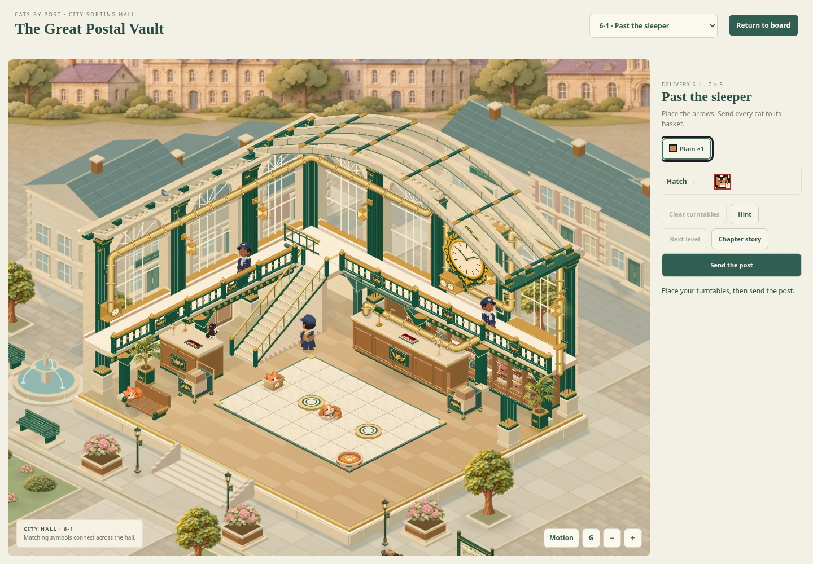
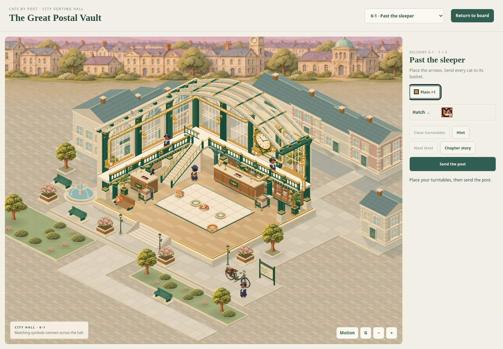
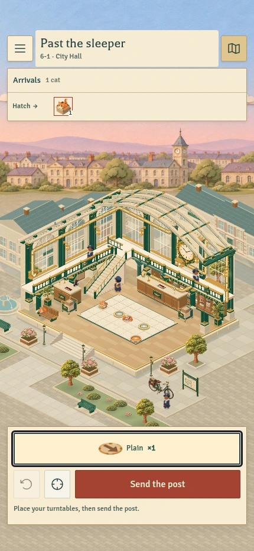
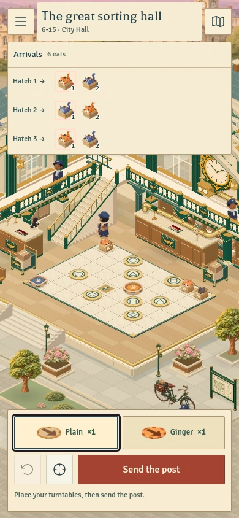

The surrounding district
The left library wing and rear civic terrace now share walls and continuous pavements. Two larger planted areas frame the entrance. The distant town has complete building bases and a softer transition into the square.

The actual phone layout




Where this leaves the quality gap
The setting is more coherent and the architecture has more weight. City Hall still needs a light-and-material pass to match Town Depot and Sorting Office. The broad paving field remains quite uniform at minimum zoom; interior warmth, green shadows and distance need stronger separation.
The next checkpoint should address those broad relationships, then review the whole scene beside the references at matched board size. The existing board perspective and workers stay fixed.
Detailed assessment and next checkpoint · Grayscale finale · Desktop finale


Verification
All 15 deliveries pass, together with 52 focused tests, 72 browser checks, 44 phone checks and 26 qualification checks. The three board images and 195 protected files remain exact. Independent Astra review found no blocking defects. See the report for the full-suite result and resource measurements.
Verification receipt · Backdrop and clipping checks · Independent review
Checks use cloud Chromium and emulated phones. Physical-device performance and artistic parity remain open.